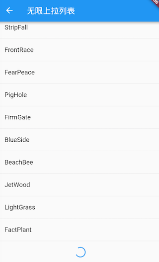

6.3 ListView
ListView是最常用的可滚动组件之一，它可以沿一个方向线性排布所有子组件，并且它也支持列表项懒加载（在需要时才会创建）。
6.3.1 默认构造函数
我们看看ListView的默认构造函数定义：
ListView({
...
//可滚动widget公共参数
Axis scrollDirection = Axis.vertical,
bool reverse = false,
ScrollController? controller,
bool? primary,
ScrollPhysics? physics,
EdgeInsetsGeometry? padding,
//ListView各个构造函数的共同参数
double? itemExtent,
Widget? prototypeItem, //列表项原型，后面解释
bool shrinkWrap = false,
bool addAutomaticKeepAlives = true,
bool addRepaintBoundaries = true,
double? cacheExtent, // 预渲染区域长度
//子widget列表
List<Widget> children = const <Widget>[],
})
上面参数分为两组：第一组是可滚动组件的公共参数，本章第一节中已经介绍过，不再赘述；第二组是ListView各个构造函数（ListView有多个构造函数）的共同参数，我们重点来看看这些参数，：
itemExtent：该参数如果不为null，则会强制children的“长度”为itemExtent的值；这里的“长度”是指滚动方向上子组件的长度，也就是说如果滚动方向是垂直方向，则itemExtent代表子组件的高度；如果滚动方向为水平方向，则itemExtent就代表子组件的宽度。在ListView中，指定itemExtent比让子组件自己决定自身长度会有更好的性能，这是因为指定itemExtent后，滚动系统可以提前知道列表的长度，而无需每次构建子组件时都去再计算一下，尤其是在滚动位置频繁变化时（滚动系统需要频繁去计算列表高度）。prototypeItem：如果我们知道列表中的所有列表项长度都相同但不知道具体是多少，这时我们可以指定一个列表项，该列表项被称为prototypeItem（列表项原型）。指定prototypeItem后，可滚动组件会在 layout 时计算一次它延主轴方向的长度，这样也就预先知道了所有列表项的延主轴方向的长度，所以和指定itemExtent一样，指定prototypeItem会有更好的性能。注意，itemExtent和prototypeItem互斥，不能同时指定它们。shrinkWrap：该属性表示是否根据子组件的总长度来设置ListView的长度，默认值为false。默认情况下，ListView会在滚动方向尽可能多的占用空间。当ListView在一个无边界(滚动方向上)的容器中时，shrinkWrap必须为true。addAutomaticKeepAlives：该属性我们将在介绍 PageView 组件时详细解释。addRepaintBoundaries：该属性表示是否将列表项（子组件）包裹在RepaintBoundary组件中。RepaintBoundary读者可以先简单理解为它是一个”绘制边界“，将列表项包裹在RepaintBoundary中可以避免列表项不必要的重绘，但是当列表项重绘的开销非常小（如一个颜色块，或者一个较短的文本）时，不添加RepaintBoundary反而会更高效（具体原因会在本书后面 Flutter 绘制原理相关章节中介绍）。如果列表项自身来维护是否需要添加绘制边界组件，则此参数应该指定为 false。
注意：上面这些参数并非
ListView特有，在本章后面介绍的其他可滚动组件也可能会拥有这些参数，它们的含义是相同的。
默认构造函数有一个children参数，它接受一个Widget列表（List<Widget>）。这种方式适合只有少量的子组件数量已知且比较少的情况，反之则应该使用ListView.builder 按需动态构建列表项。
注意：虽然这种方式将所有
children一次性传递给 ListView，但子组件）仍然是在需要时才会加载（build（如有）、布局、绘制），也就是说通过默认构造函数构建的 ListView 也是基于 Sliver 的列表懒加载模型。
下面是一个例子：
ListView(
shrinkWrap: true,
padding: const EdgeInsets.all(20.0),
children: <Widget>[
const Text('I\'m dedicating every day to you'),
const Text('Domestic life was never quite my style'),
const Text('When you smile, you knock me out, I fall apart'),
const Text('And I thought I was so smart'),
],
);
可以看到，虽然使用默认构造函数创建的列表也是懒加载的，但我们还是需要提前将 Widget 创建好，等到真正需要加载的时候才会对 Widget 进行布局和绘制。
6.3.2 ListView.builder
ListView.builder适合列表项比较多或者列表项不确定的情况，下面看一下ListView.builder的核心参数列表：
ListView.builder({
// ListView公共参数已省略
...
required IndexedWidgetBuilder itemBuilder,
int itemCount,
...
})
itemBuilder：它是列表项的构建器，类型为IndexedWidgetBuilder，返回值为一个widget。当列表滚动到具体的index位置时，会调用该构建器构建列表项。itemCount：列表项的数量，如果为null，则为无限列表。
下面看一个例子：
ListView.builder(
itemCount: 100,
itemExtent: 50.0, //强制高度为50.0
itemBuilder: (BuildContext context, int index) {
return ListTile(title: Text("$index"));
}
);
运行效果如图6-3所示：

6.3.3 ListView.separated
ListView.separated可以在生成的列表项之间添加一个分割组件，它比ListView.builder多了一个separatorBuilder参数，该参数是一个分割组件生成器。
下面我们看一个例子：奇数行添加一条蓝色下划线，偶数行添加一条绿色下划线。
class ListView3 extends StatelessWidget {
@override
Widget build(BuildContext context) {
//下划线widget预定义以供复用。
Widget divider1=Divider(color: Colors.blue,);
Widget divider2=Divider(color: Colors.green);
return ListView.separated(
itemCount: 100,
//列表项构造器
itemBuilder: (BuildContext context, int index) {
return ListTile(title: Text("$index"));
},
//分割器构造器
separatorBuilder: (BuildContext context, int index) {
return index%2==0?divider1:divider2;
},
);
}
}
运行效果如图6-4所示：

6.3.4 固定高度列表
前面说过，给列表指定 itemExtent 或 prototypeItem 会有更高的性能，所以当我们知道列表项的高度都相同时，强烈建议指定 itemExtent 或 prototypeItem 。下面看一个示例：
class FixedExtentList extends StatelessWidget {
const FixedExtentList({Key? key}) : super(key: key);
@override
Widget build(BuildContext context) {
return ListView.builder(
prototypeItem: ListTile(title: Text("1")),
//itemExtent: 56,
itemBuilder: (context, index) {
//LayoutLogPrint是一个自定义组件，在布局时可以打印当前上下文中父组件给子组件的约束信息
return LayoutLogPrint(
tag: index,
child: ListTile(title: Text("$index")),
);
},
);
}
}
因为列表项都是一个 ListTile，高度相同，但是我们不知道 ListTile 的高度是多少，所以指定了prototypeItem ，运行后，控制台打印：
flutter: 0: BoxConstraints(w=428.0, h=56.0)
flutter: 1: BoxConstraints(w=428.0, h=56.0)
flutter: 2: BoxConstraints(w=428.0, h=56.0)
...
可见 ListTile 的高度是 56 ，所以我们指定 itemExtent 为 56也是可以的。但是笔者还是建议优先指定原型，这样的话在列表项布局修改后，仍然可以正常工作（前提是每个列表项的高度相同）。
如果本例中不指定 itemExtent 或 prototypeItem ，我们看看控制台日志信息：
flutter: 0: BoxConstraints(w=428.0, 0.0<=h<=Infinity)
flutter: 1: BoxConstraints(w=428.0, 0.0<=h<=Infinity)
flutter: 2: BoxConstraints(w=428.0, 0.0<=h<=Infinity)
...
可以发现，列表不知道列表项的具体高度，高度约束变为 0.0 到 Infinity。
6.3.5 ListView 原理
ListView 内部组合了 Scrollable、Viewport 和 Sliver，需要注意：
- ListView 中的列表项组件都是 RenderBox，并不是 Sliver， 这个一定要注意。
- 一个 ListView 中只有一个Sliver，对列表项进行按需加载的逻辑是 Sliver 中实现的。
- ListView 的 Sliver 默认是 SliverList，如果指定了
itemExtent，则会使用 SliverFixedExtentList；如果prototypeItem属性不为空，则会使用 SliverPrototypeExtentList，无论是是哪个，都实现了子组件的按需加载模型。
6.3.6 实例：无限加载列表
假设我们要从数据源异步分批拉取一些数据，然后用ListView展示，当我们滑动到列表末尾时，判断是否需要再去拉取数据，如果是，则去拉取，拉取过程中在表尾显示一个loading，拉取成功后将数据插入列表；如果不需要再去拉取，则在表尾提示"没有更多"。代码如下：
import 'package:flutter/material.dart';
import 'package:english_words/english_words.dart';
import 'package:flutter/rendering.dart';
class InfiniteListView extends StatefulWidget {
@override
_InfiniteListViewState createState() => _InfiniteListViewState();
}
class _InfiniteListViewState extends State<InfiniteListView> {
static const loadingTag = "##loading##"; //表尾标记
var _words = <String>[loadingTag];
@override
void initState() {
super.initState();
_retrieveData();
}
@override
Widget build(BuildContext context) {
return ListView.separated(
itemCount: _words.length,
itemBuilder: (context, index) {
//如果到了表尾
if (_words[index] == loadingTag) {
//不足100条，继续获取数据
if (_words.length - 1 < 100) {
//获取数据
_retrieveData();
//加载时显示loading
return Container(
padding: const EdgeInsets.all(16.0),
alignment: Alignment.center,
child: SizedBox(
width: 24.0,
height: 24.0,
child: CircularProgressIndicator(strokeWidth: 2.0),
),
);
} else {
//已经加载了100条数据，不再获取数据。
return Container(
alignment: Alignment.center,
padding: EdgeInsets.all(16.0),
child: Text(
"没有更多了",
style: TextStyle(color: Colors.grey),
),
);
}
}
//显示单词列表项
return ListTile(title: Text(_words[index]));
},
separatorBuilder: (context, index) => Divider(height: .0),
);
}
void _retrieveData() {
Future.delayed(Duration(seconds: 2)).then((e) {
setState(() {
//重新构建列表
_words.insertAll(
_words.length - 1,
//每次生成20个单词
generateWordPairs().take(20).map((e) => e.asPascalCase).toList(),
);
});
});
}
}
运行后效果如图6-5、6-6所示：
 
代码比较简单，读者可以参照代码中的注释理解，故不再赘述。需要说明的是，_retrieveData()的功能是模拟从数据源异步获取数据，我们使用english_words包的generateWordPairs()方法每次生成20个单词。
添加固定列表头
很多时候我们需要给列表添加一个固定表头，比如我们想实现一个商品列表，需要在列表顶部添加一个“商品列表”标题，期望的效果如图 6-7 所示：

我们按照之前经验，写出如下代码：
@override
Widget build(BuildContext context) {
return Column(children: <Widget>[
ListTile(title:Text("商品列表")),
ListView.builder(itemBuilder: (BuildContext context, int index) {
return ListTile(title: Text("$index"));
}),
]);
}
然后运行，发现并没有出现我们期望的效果，相反触发了一个异常；
Error caught by rendering library, thrown during performResize()。
Vertical viewport was given unbounded height ...
从异常信息中我们可以看到是因为ListView高度边界无法确定引起，所以解决的办法也很明显，我们需要给ListView指定边界，我们通过SizedBox指定一个列表高度看看是否生效：
... //省略无关代码
SizedBox(
height: 400, //指定列表高度为400
child: ListView.builder(
itemBuilder: (BuildContext context, int index) {
return ListTile(title: Text("$index"));
},
),
),
...
运行效果如图6-8所示：

可以看到，现在没有触发异常并且列表已经显示出来了，但是我们的手机屏幕高度要大于 400，所以底部会有一些空白。那如果我们要实现列表铺满除表头以外的屏幕空间应该怎么做？直观的方法是我们去动态计算，用屏幕高度减去状态栏、导航栏、表头的高度即为剩余屏幕高度，代码如下：
... //省略无关代码
SizedBox(
//Material设计规范中状态栏、导航栏、ListTile高度分别为24、56、56
height: MediaQuery.of(context).size.height-24-56-56,
child: ListView.builder(itemBuilder: (BuildContext context, int index) {
return ListTile(title: Text("$index"));
}),
)
...
运行效果如下图6-9所示：

可以看到，我们期望的效果实现了，但是这种方法并不优雅，如果页面布局发生变化，比如表头布局调整导致表头高度改变，那么剩余空间的高度就得重新计算。那么有什么方法可以自动拉伸ListView以填充屏幕剩余空间的方法吗？当然有！答案就是Flex。前面已经介绍过在弹性布局中，可以使用Expanded自动拉伸组件大小，并且我们也说过Column是继承自Flex的，所以我们可以直接使用Column + Expanded来实现，代码如下：
@override
Widget build(BuildContext context) {
return Column(children: <Widget>[
ListTile(title:Text("商品列表")),
Expanded(
child: ListView.builder(itemBuilder: (BuildContext context, int index) {
return ListTile(title: Text("$index"));
}),
),
]);
}
运行后，和图6-9一样，完美实现了！
6.3.7 总结
本节主要介绍了ListView 常用的使用方式和要点，但并没有介绍ListView.custom方法，它需要实现一个SliverChildDelegate 用来给 ListView 生成列表项组件，更多详情请参考 API 文档。